創価大学 Team SOBITS
Soka University Team SOBITS
Robot for happiness
SOBITSの概要
About SOBITS
SOBITSは創価大学理工学研究科の崔研究室と萩原研究室のメンバーによって構成されています。我々の研究室では、ロボットや機械が“人と共創”することによって、より快適な社会を実現できることを目指して、日々研究を行っております。また、研究の一環として、生活支援ロボットの競技会であるRoboCup
@Homeに参加しており、SOBIT MINI, SOBIT PRO, SOBIT EDU、SOBYというロボットを開発しました。
研究室内でのコミュニケーションは活発で、学部生と大学院生の壁を越えて、研究や開発に関して和気藹々と取り組んでいます。学生主体の活動が軸となっていて、自主性を大切にした考え方でなんでも挑戦し知識や経験を身に着け、ロボット競技での優勝を目指して、ソフトウェアとハードウェアの両方の側面から開発を行っています。
SOBITS is composed of members of Choi Laboratory and Hgiwara Laboratory, Graduate School of Science and Technology, Soka University. Our research aims to realize a more comfortable society through the "co-creation" of robots and machines with people. As part of our research, we have participated in RoboCup @Home, a life support robot competition,
and developed SOBIT MINI, SOBIT PRO, SOBIT EDU, and SOBY robots.
Communication in the laboratory is very active, and we work harmoniously on research and development, transcending the barriers between undergraduate and graduate students. The activities are centered on student-centered activities, and we are developing both software and hardware aspects
of the robot with the aim of winning the robot competition by challenging anything and gaining knowledge and experience with a mindset that values independence.
SOBITSの起源
Origin of SOBITS
“SOBITS”は、研究室の代名詞的ロボットである“SOBIT”（ソビット）が由来しています。SOBITは、“創価大学の光”という意味を基に、創価【SOKA】の光【빛：BIT】から名を取って、崔先生によって名付けられました。そして崔先生が研究室を持ってから10年後の2010年、初出場となるロボカップを前にチームSOBITSは結成されました。
The name "SOBITS" is derived from "SOBIT," a robot synonymous with our laboratory. It was named by Dr. Choi after the light [빛: BIT] of Soka [SOKA], based on the meaning of "the light of Soka University. Team SOBITS was formed in 2010, 10 years after Dr. Choi had his laboratory, in anticipation of the RoboCup, in which they would compete for the first time.
研究領域
Research Areas
当研究室では、以下の5つのプロジェクトを中心に、より快適な社会の実現を目指した研究を行っています。
In our laboratory, we are conducting research focused on the following five projects to realize a more comfortable society.
SOBITS Guider
SOBITS Guider
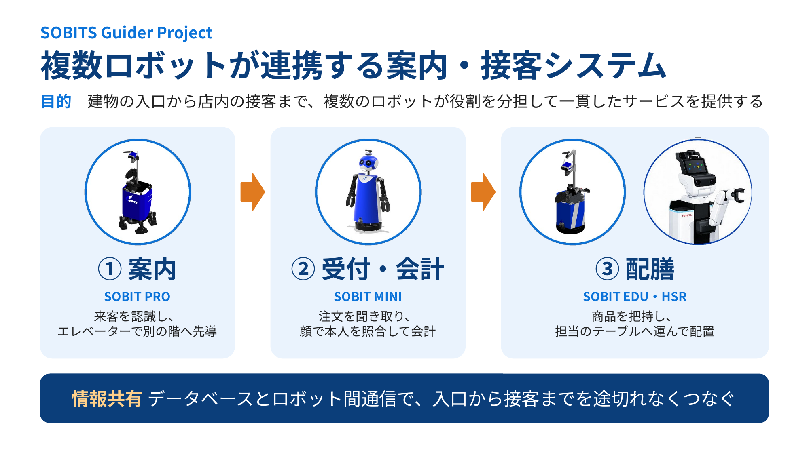
Guiderでは、複数のロボットが案内・受付・配膳・会計の役割を分担し、データベースとロボット間通信で情報を共有しながら、多階層の建物の入口から店内の接客までを途切れなく行う案内・接客システムの研究開発を行っています。
In Guider, multiple robots share the roles of guidance, reception, serving, and payment, and share information through a database and inter-robot communication to provide uninterrupted guidance and customer service from the entrance of a multi-story building to the interior of the store.
SOBITS @Space
SOBITS @Space
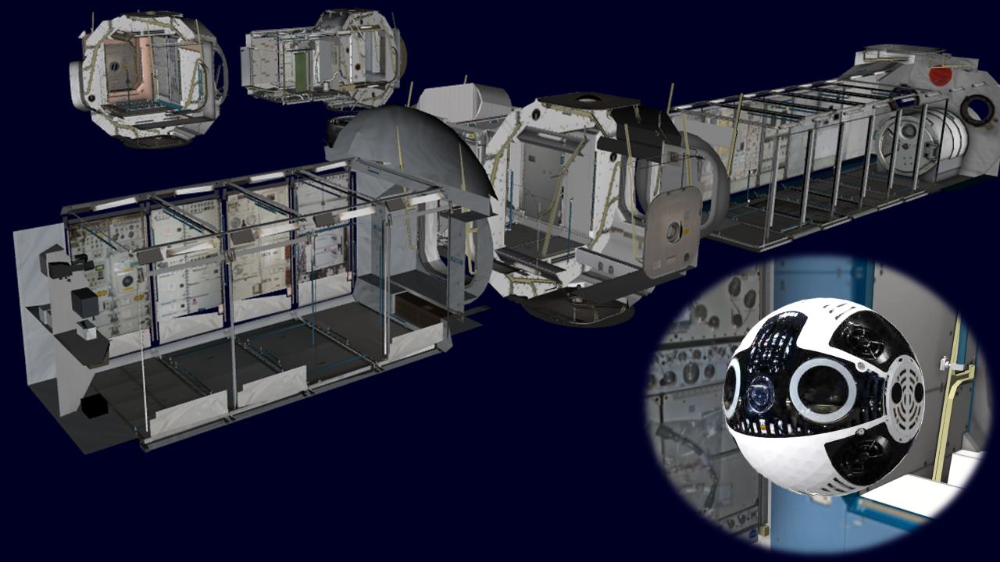
SOBITS @Spaceでは、宇宙飛行士の負担軽減のため、微小重力環境の宇宙ステーションで点検作業や撮影をロボットが自律的に行う研究をしています。私達はJAXAが提供しているシミュレータを用いて日々研究開発を行っています。
In SOBITS @Space, we are researching how robots can autonomously perform inspection and photography tasks in the microgravity environment of a space station to reduce the burden on astronauts. We conduct daily research and development using simulators provided by JAXA.
SOBIT-X
SOBIT-X
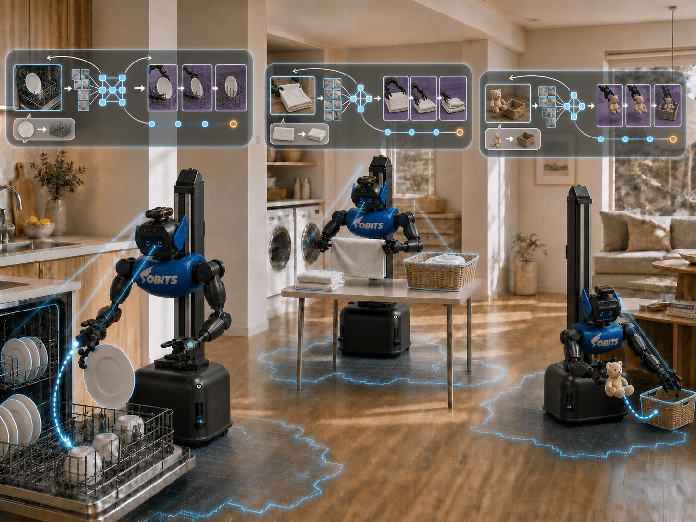
SOBIT-Xでは、画像と言葉から動作を生成するVLAや行動の結果を予測する世界行動モデル（WAM）を用いて、洗濯物をたたむ・食器を片付けるといった、より高度な家事をこなす移動ロボットの研究を行っています。
SOBIT-X uses VLA (Vision-Language-Action) and WAM (World Action Model) to generate actions from images and text, and to predict the outcomes of actions. The research focuses on developing mobile robots that can perform more advanced household tasks, such as folding laundry and organizing dishes.
Hactile-Robotics
Hactile-Robotics
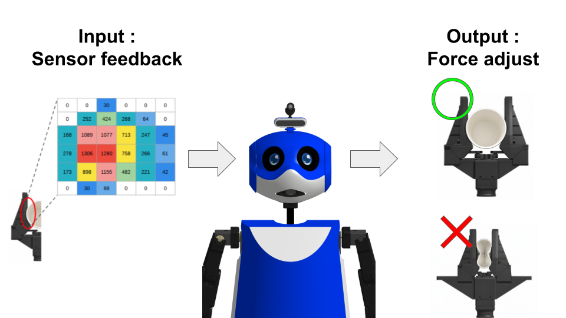
Hactile-Roboticsでは，触覚センシング×ロボティクスにより，食品や生活雑貨などロボットが家庭環境で把持する多様な物体について，触覚情報に基づく適切な把持制御の実現を目指しています．
In Hactile-Robotics, we are researching how to achieve appropriate grasping control based on tactile information for a variety of objects that robots can grasp in a home environment, using the combination of tactile sensing and robotics.
SOBITS World Model
SOBITS World Model
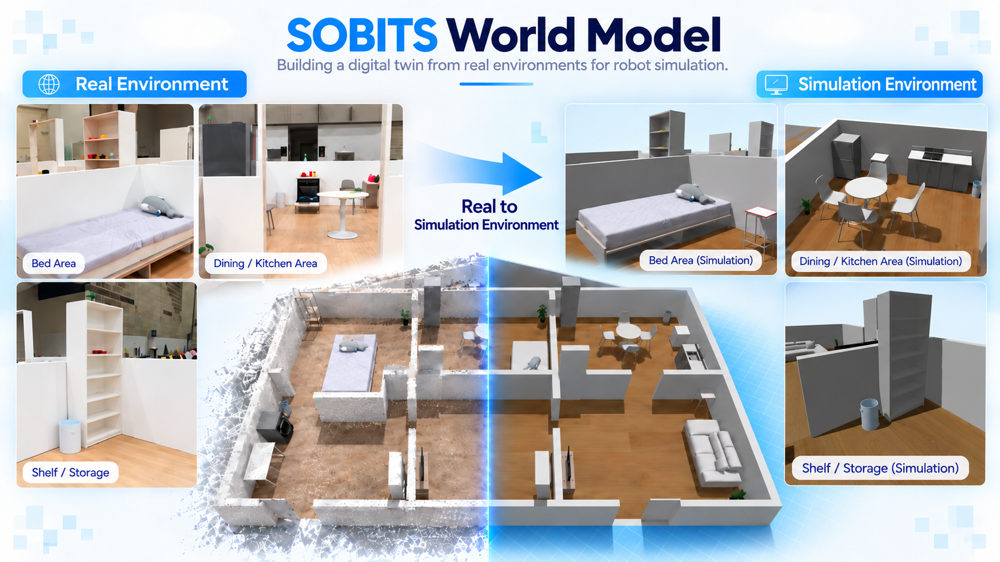
SOBITS World Modelでは、実環境の情報からロボットシミュレーション環境を構築し、Real2Sim2Realによって実世界とシミュレーションをつなぐことで、ロボット開発・検証の効率化を目指しています。
SOBITS World Model aims to construct a robot simulation environment from real-world information and connect the real world and simulation through Real2Sim2Real, thereby improving the efficiency of robot development and verification.
RoboCup
RoboCup
RoboCupとは、ロボット工学と人工知能が融合する自律型ロボットの研究及び教育の深化を目的としたロボットの競技大会です。Team SOBITSは、日常生活でのロボットの利用を想定し、 いかに人との暮らしに役立つ作業を遂行できるかを競い合う「RoboCup@Home」に出場しています。その中でも、自らが作製したロボットで高度な各種技能を競い合う「Open Platform League」、 実際のロボットを用いて基本的な技能を競い合う「Education League」、ロボットシミュレータやVRを用いて人とロボットとのインタラクション(相互作用)を競い合う「Simulation Open Platform League」、 トヨタ自動車製のロボットHSRを用いて、日常生活でのロボットの利用を想定したタスクを遂行する「Domestic Standard Platform League」の4つのリーグに挑戦しています。
RoboCup is a robotics competition that combines robotics and artificial intelligence to advance research and education on autonomous robots.
Team SOBITS is participating in "RoboCup@Home," a competition that pits teams against each other to perform tasks that are useful to humans and their everyday lives. The competition is divided into four leagues: the "Open Platform League," in which teams compete in advanced skills using robots they've built themselves; the "Education League," in which teams compete in basic skills using actual robots; the "Simulation Open Platform League," in which teams compete in human-robot interaction using robot simulators and VR; and the "Domestic Standard Platform League," in which teams use Toyota's HSR robot to perform tasks that simulate the use of robots in everyday life.
Qualification Video
Qualification Video
SOBITS 2026 Qualification Video
Archive
Team Description Paper
- SOBITS 2026 Team Description Paper
- SOBITS 2024 Team Description Paper
- SOBITS 2023 Team Description Paper
HISTORY
SOBITSの過去・現在・未来
The Past, Present, and Future of SOBITS.
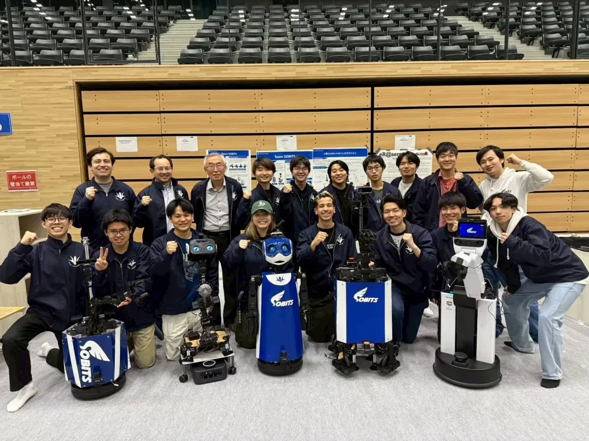
2025.5
ロボカップジャパンオープン2025.5
RoboCup Japan Open 2025.5
＠ホーム オープンプラットフォームリーグ 準優勝
＠ホーム オープンプラットフォームリーグ カチャカチャレンジ 優勝
＠ホーム オープンプラットフォームリーグ ベストポスターアワード
＠ホーム オープンプラットフォームリーグ オープンチャレンジ 3位
＠ホーム ドメスティックオープンプラットフォームリーグ ビギナーズチャレンジ 優勝
@Home Domestic Standard Platform: Beginner's Challenge Winner
@Home Open Platform: 2nd Place
@Home Open Platform: Kachaka Challenge 1st Place
@Home Open Platform: Best Poster Award
@Home Open Platform: Open Challenge 3rd Place

2025
SOBITS過去最多のメンバー数へ
SOBITS reaches its highest number of members ever

2024.9
ロボカップマレーシアオープン2024
RoboCup Malaysia Open 2024
Best HRI (Human-Robot Interaction) Award：人とロボットのコミュニケーション部門の最優秀賞
Best Presentation Award：Finalsにおけるプレゼンテーションの最優秀賞
Best Oral Presentation賞
Best HRI (Human-Robot Interaction) Award: Highest award in the human-robot communication category
Best Presentation Award: Best presentation at the Finals
Best Oral Presentation Award
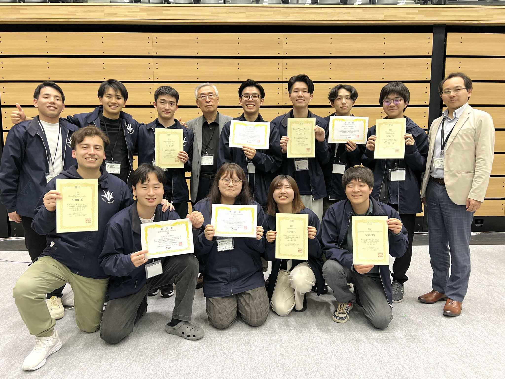
2024.4
ロボカップジャパンオープン2024.4
RoboCup Japan Open 2024.4
＠ホーム エデュケーションリーグ 4位
＠ホーム オープンプラットフォームリーグ 優勝
＠ホーム シミュレーションOPL 優勝
＠ホーム ドメスティックオープンプラットフォームリーグ 5位敢闘賞
@Home Education League: 4th place
@Home Open Platform League: Winner
@Home Simulation OPL: Winner
@Home Domestic Open Platform League: 5th place (Special Award for Outstanding Effort)

2024
萩原先生が創価大学に着任
Associate Professor Hagiwara has joined Soka University
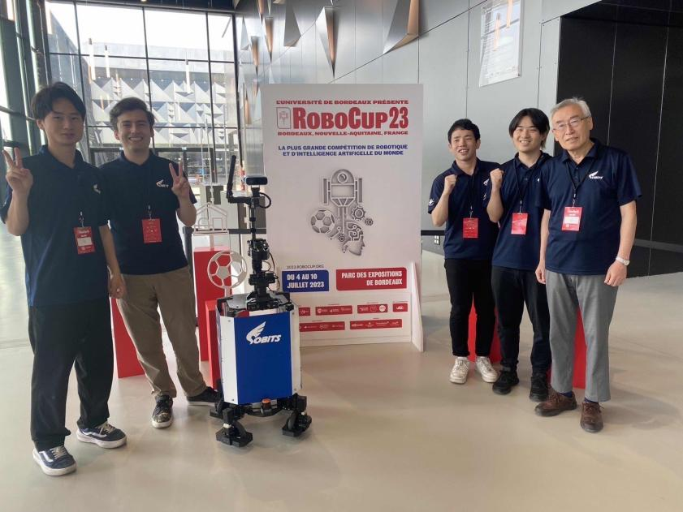
2023.7
ロボカップフランスオープン2023.7
RoboCup France Open 2023.7
＠ホーム オープンプラットフォームリーグ 初出場
Open Platform League debut appearance @Home

2023.5
ロボカップジャパンオープン2023.5
RoboCup Japan Open 2023.5
＠ホーム エデュケーションリーグ 3位入賞
＠ホーム オープンプラットフォームリーグ 優勝
＠ホーム シミュレーションOPL優勝
＠ホーム ドメスティックオープンプラットフォームリーグ初参加
Education League 2st place @Home
Open Platform League 1st place @Home
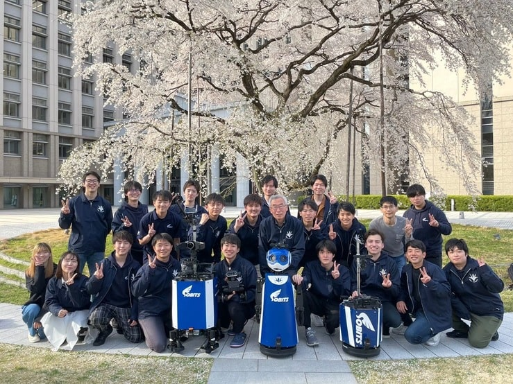
2022
ロボカップジャパンオープン2022
RoboCup Japan Open 2022
＠ホーム エデュケーションリーグ 準優勝
＠ホーム オープンプラットフォームリーグ 優勝
＠ホーム シミュレーションOPL優勝
Education League 2st place @Home
Open Platform League 1st place @Home
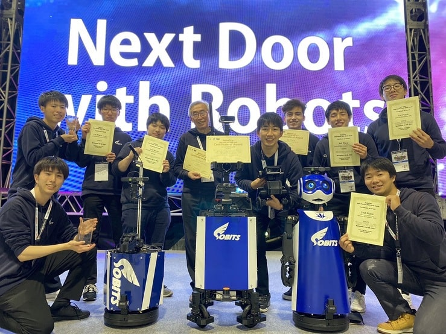
2021
ロボカップアジアパシフィック2021
RoboCup Asia Pacific 2021
＠ホーム シミュレーション OPL 準優勝
＠ホーム シミュレーション テクニカルチャレンジ 優勝
＠ホーム エデュケーションリーグ 優勝
＠ホーム オープンプラットフォームリーグ 準優勝
Simulation League OPL 2st place @Home
Simulation League technical challenge 1st place @Home
Education League 1st place @Home
Open Platform League 2st place @Home
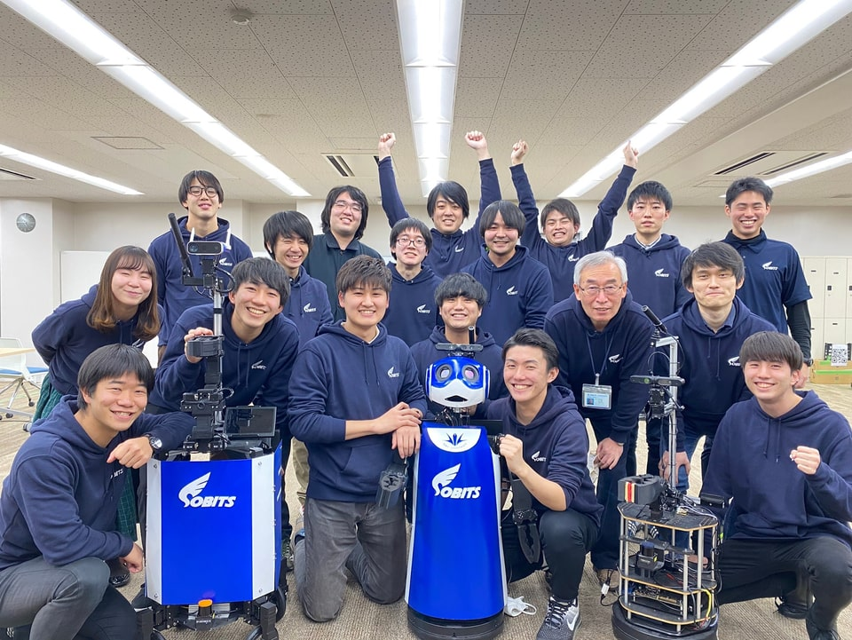
2020
ロボカップジャパンオープン2020
RoboCup Japan Open 2020
＠ホーム シミュレーション OPL 優勝
＠ホーム シミュレーション テクニカルチャレンジ 3位入賞
＠ホーム シミュレーション DSPL 準優勝
＠ホーム エデュケーションリーグ 優勝
＠ホーム オープンプラットフォームリーグ 3位入賞
Simulation League OPL 1st place @Home
Simulation League technical challenge 3st place @Home
Simulation League DSPL 2st place @Home
Education League 1st place @Home
Open Platform League 1st place @Home
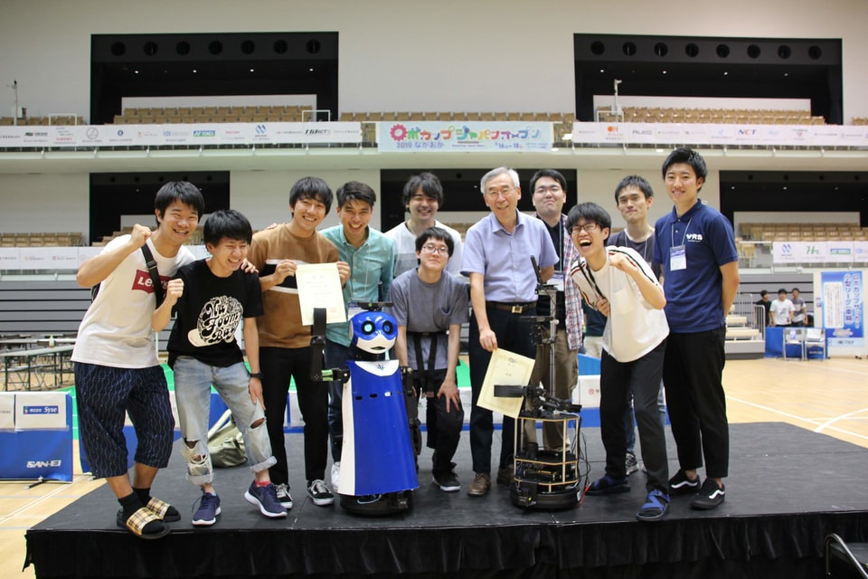
2019
ロボカップジャパンオープン2019 ながおか
RoboCup Japan Open 2019 in Nagaoka
＠ホーム シミュレーションリーグ 優勝
Simulation League 1st place @Home
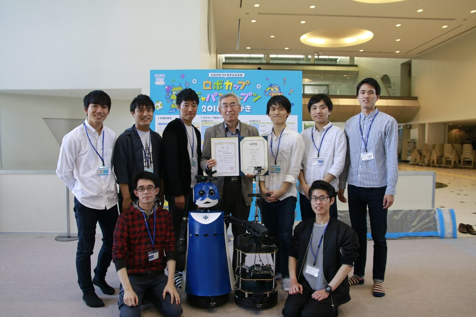
2018.5
ロボカップジャパンオープン2018 おおがき
RoboCup Japan Open 2018 Ogaki
＠ホーム エデュケーションリーグ 優勝 ＠ホーム シミュレーションリーグ 優勝
Simulation League 1st place @Home Education League 1st place @Home
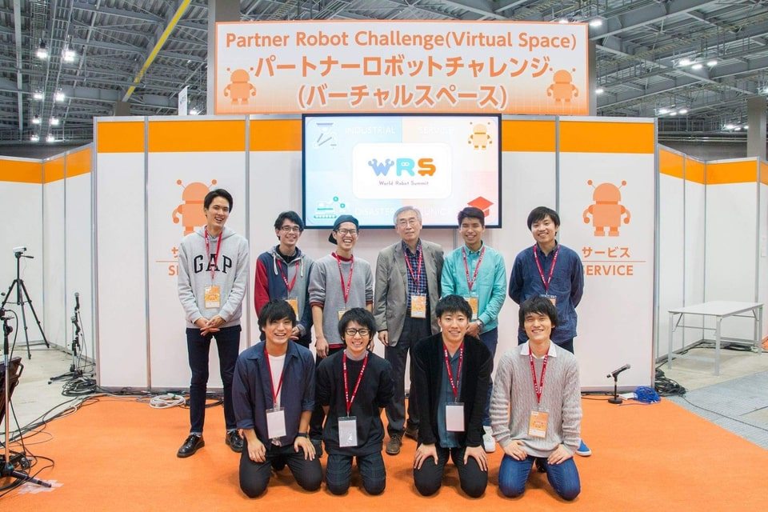
2018.10
World Robot Summit 2018
Service robotics category Partner robot challenge Virtual space 2nd Place
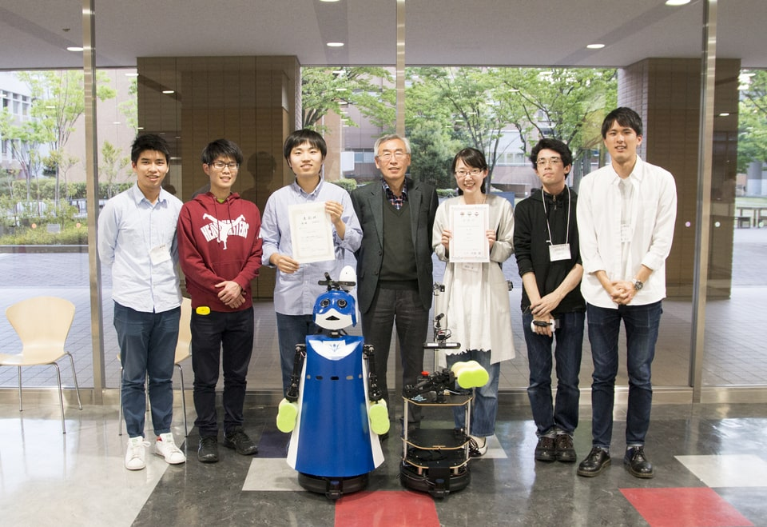
2017
ロボカップジャパンオープン2017 (名城大学)
RoboCup Japan Open 2017 in Meijo University
＠ホーム シミュレーションリーグ 優勝
Simulation League 1st place @Home
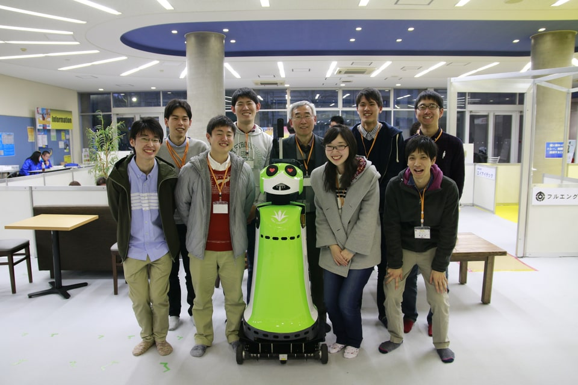
2016
ロボカップジャパンオープン2016愛知
RoboCup Japan Open 2016 in Aichi
＠ホーム シミュレーションリーグ 準優勝
Simulation League 2st place @Home
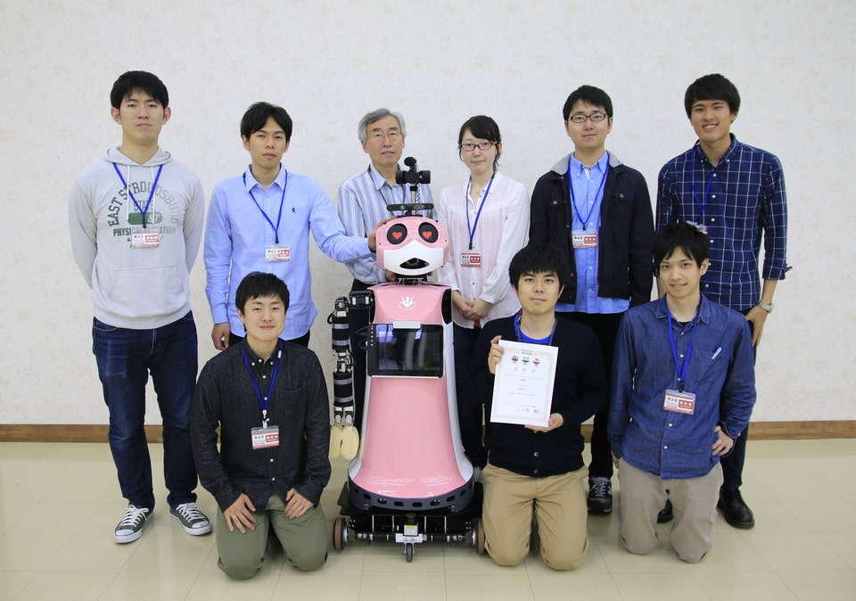
2015
ロボカップジャパンオープン2015福井
RoboCup Japan Open 2015 in Fukui
＠ホーム シミュレーションリーグ 優勝
Simulation League 1st place @Home
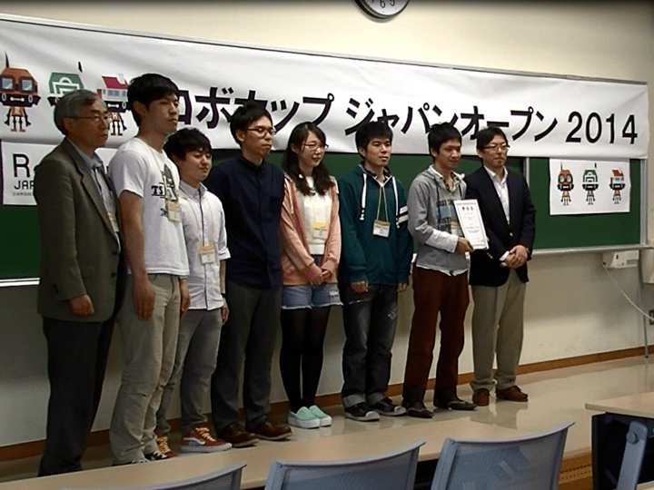
2014
ロボカップジャパンオープン2014
RoboCup Japan Open 2014
＠ホーム シミュレーションリーグ 優勝
Simulation League 1st place @Home
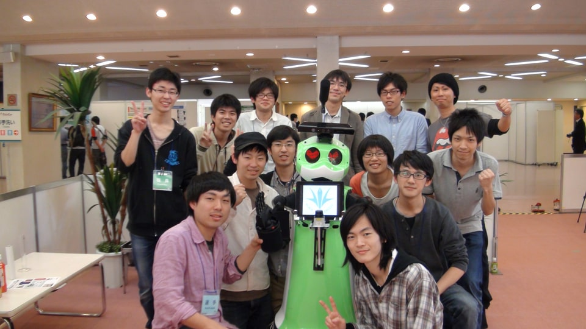
2013
ロボカップジャパンオープン2013東京
RoboCup Japan Open 2013 in Tokyo
＠ホーム シミュレーションリーグ 優勝
Simulation League 1st place @Home
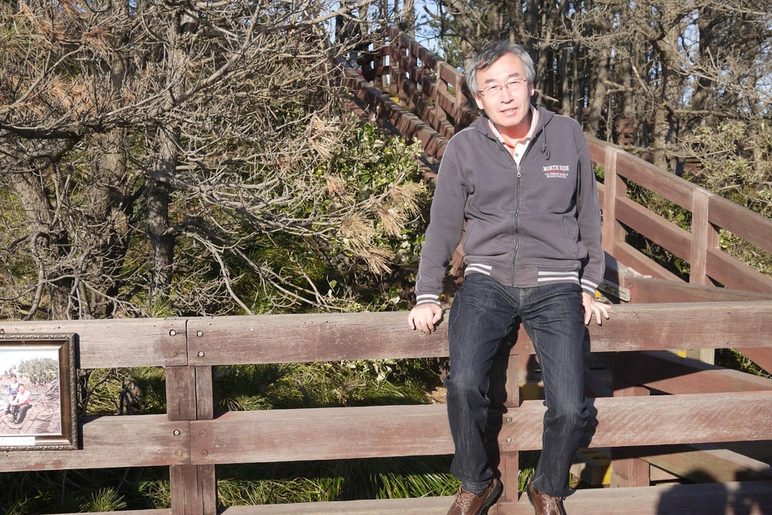
2012.4
崔先生が教授に就任
Dr. Choi appointed Professor
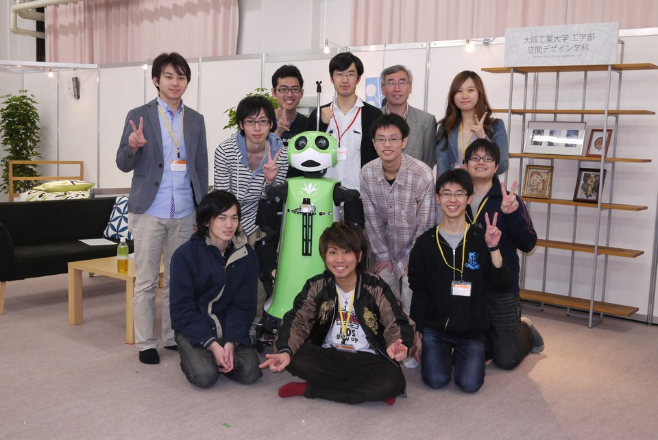
2012.5
ロボカップジャパンオープン2012大阪
RoboCup Japan Open 2012 in Osaka
@ホーム部門 Innovation Award 受賞
Innovation Award in the @Home category
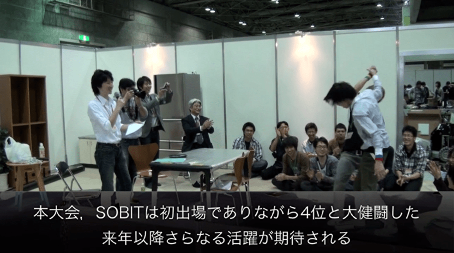
2011
ロボカップジャパンオープン2011大阪
RoboCup Japan Open 2011 in Osaka
＠ホームリーグ 4位入賞
4th Place in @Home League
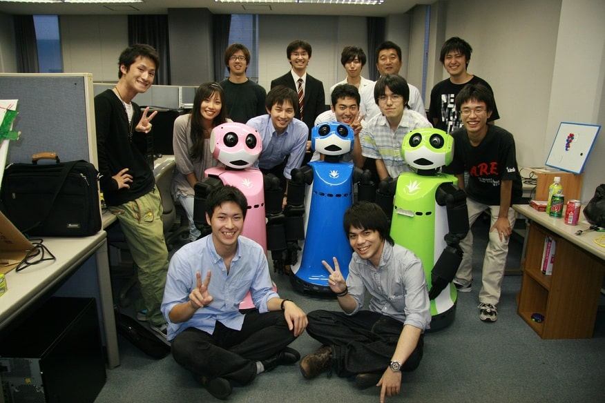
2010
SOBITS結成
SOBITS formed
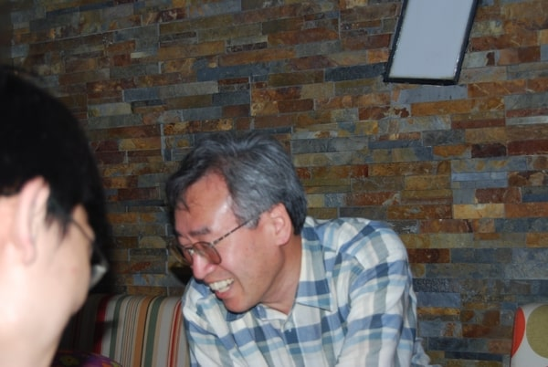
2006
崔先生が准教授に就任
Dr. Choi appointed Associate Professor
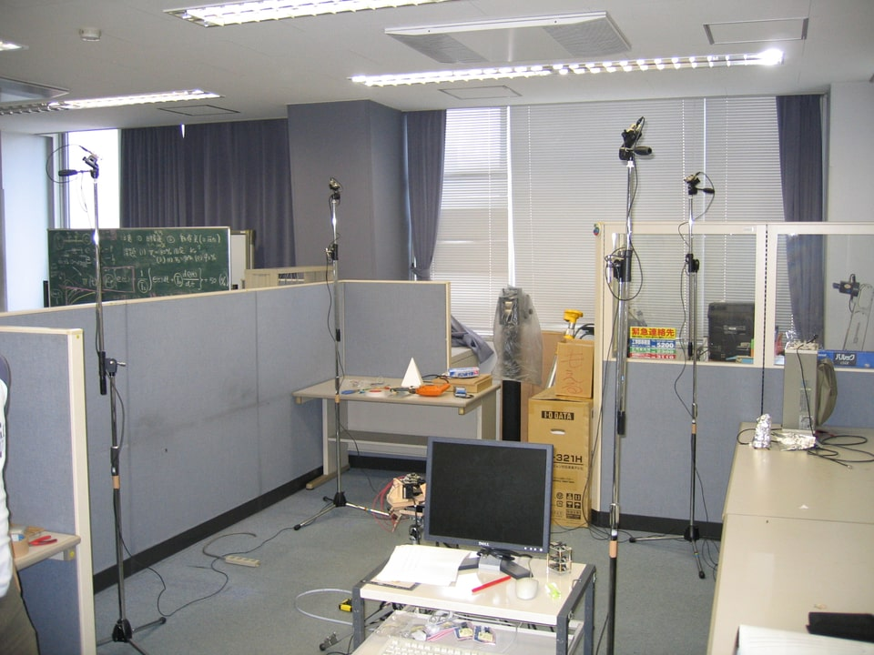